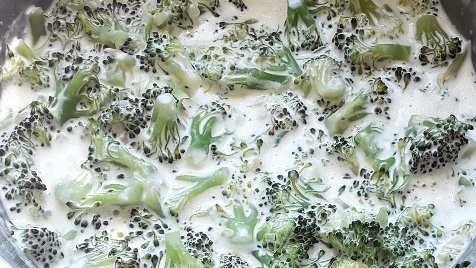
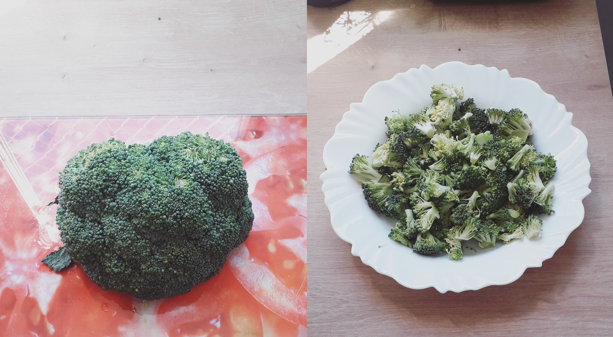
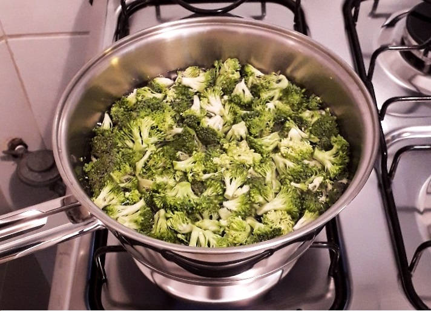

Torta Salgada da Tia Angélica
Oláaaa galerinhaaaaa!!! A larica da fome está batendo, não é? Pois hoje vou ensinar uma
receita deliciosamente incrível: A torta salgada da tia angélica!!! Ela tem esse nome porque
a Tia Angélica que me ensinou esta receita. Esta receita é tão boa que faz com que as pessoas
que comem esta receita se apaixone loucamente pela cozinheiro (e este é meu truque
para encantar o coração da Larissa hahahahaha).
Sem mais delongas, vamos a receita da torta!!! Eu adaptei a receita para ficar mais
barata (o queijo não está nada barato), mas mesmo assim a torta fica maravilhosa!

Ingredientes
- 2 xícaras de chá de leite morno
- 2 xícaras de chá de farinha de trigo
- 1 xícara de chá de óleo
- 2 ovos
- 10g de fermento biológico para pão (vende em mercado)
- 1 colher de café de açúcar
- 1 colher de café de sal
- 200g de creme de leite
- 1 tomates cortados em rodelas
- MUITO ORÉGANO
- Margarina e papel toalha/guardanapo (para untar uma travessa)
- Obs: 1 xícara de chá tem 240 ml
Preparação
-
Coloque no liquidificardor a farinha de trigo, o leite, o óleo, os ovos, o açúcar e o sal.
Bata tudo no liquidificador.

-
Depois de bater, coloque o fermento biológico para pão e, com uma colher, mexa-o suavemente
para espalhar na massa.
-
Depois disso, divida a mistura meio a meio entre dois recipientes grandes e deixe
descansar por 20 a 30 minutos. A mágica dessa receita é que, por causa do fermento
biológico, a massa vai crescer nesse meio tempo! Por isso que é necessário já dividir a
massa em duas partes: para que a massa não vaze do liquidificador!
-
Unte travessa com a margarina e coloque a metade da massa (já crescida) na travessa. Já vai
aproveitando e pré-aqueça o forno em temperatura baixa (180°C).

-
Depois disso, coloque o creme de leite e espalhe-o por cima da massa. Atente-se ao
fato do creme de leite ter que ficar em cima da massa, conforme a figura abaixo. Ou
seja, cuidado na hora de espalhá-lo!.
-
Espalhe as rodelas de tomate em cima do creme de leite. Espalhe também orégano a gosto.
-
Por fim, coloque a outra metade da massa e espalhe-a, conforme a figura abaixo:
-
Leve a travessa ao forno e deixe lá por 30 minutos mais ou menos. POR FAVOR, deixe de ser
acomodado e vai vendo se a massa debaixo da travessa está queimando ou não hahaha.
-
Depois de 30 minutos, a torta salgada da tia Angélica estará pronta!!! A recomendação
da tia Angélica é de esperar 4 horas depois da torta pronta para que ela fique mais
fria e, assim, mais fácil de ser separada na hora de se servir. Contudo, como eu sou
vida louca mesmo, eu como a torta quente - e fica uma delícia!!!